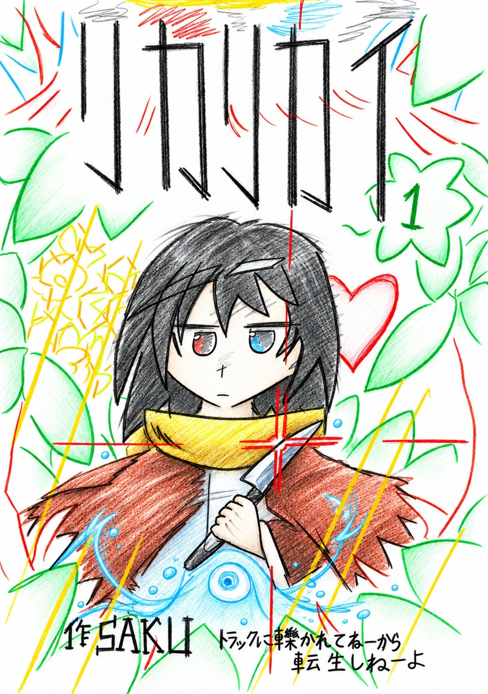
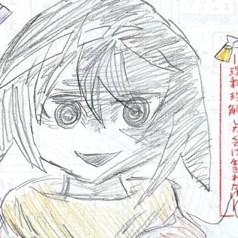
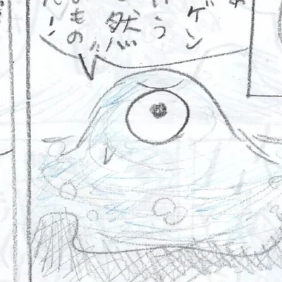
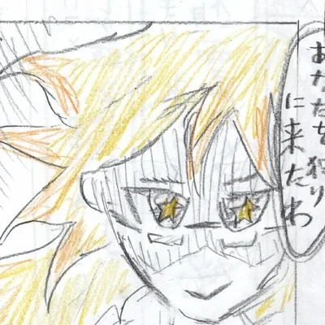
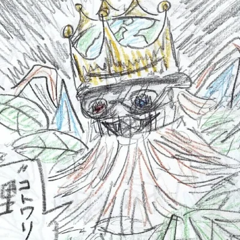

リカリカイ
理解した者だけが生き残る
リカリカイ
全1話
|
コミックス
新しい順
リカリカイ
山に捨てられた14歳の少年・理人（りひと）は、獲物を観察して理解することで山を生き抜いてきた。ある日、水の精霊と出会い、自然そのものである精霊と、それを狩る「戦精」の存在を知る。精霊は理解すれば倒せる。だが理科を理解し続けないと、死の呪いが待っていた。

作者SAKU
登場人物

主人公理人りひと山に捨てられた14歳。自然を観察し理解して生き抜いてきた。

水の精霊理人が山で出会った精霊。自然そのものの存在。

リカ実験の戦精。精霊を狩りに来た。

理科の始祖精霊理科の精霊の始祖。範囲型の強大な存在。